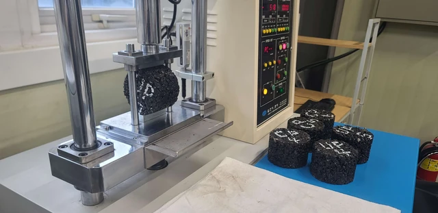
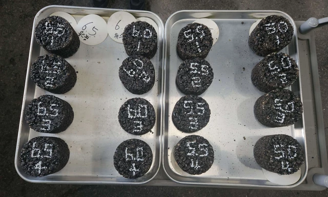
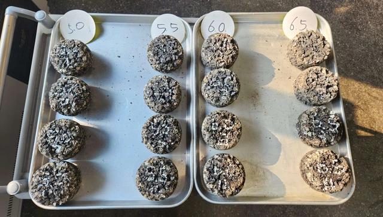

2024–2025 · 배합설계 · 실내시험 직접 수행
에폭시 혼합물 배합설계·성능평가
혼합물의 강도와 골재비산저항을 어떻게 평가하는가?
연구 목적
에폭시 아스팔트 혼합물의 배합설계와 상호 보완적인 실내시험을 수행한 연구입니다. 강도, 골재비산저항과 체적 특성을 각각 구분하여 혼합물을 평가했습니다.
본인 기여
- 에폭시 아스팔트 혼합물 배합설계와 시편 제작을 수행했습니다.
- 마샬 안정도, 간접인장강도(ITS), 칸타브로 손실률, 이론최대비중(Gmm) 시험을 직접 수행했습니다.
- 실험기록을 정리하고 기술보고서 및 논문 작성에 기여했습니다.

간접인장강도 시험
원주형 아스팔트 혼합물 시편에 하중을 가하는 실제 시험 장면입니다.
방법과 연구 과정
- 01배합설계
- 02시편 제작
- 034개 성능·물성 시험
마샬 안정도와 ITS는 서로 다른 재하 구성에서 강도를 평가합니다. 칸타브로 시험에서는 시험 전후 질량으로 손실률을 산정하며, Gmm는 혼합물의 체적 특성 평가와 연결됩니다. 이들 시험을 통해 배합설계를 강도·재료 손실·체적 특성과 연결하여 검토했습니다.
서로 다른 촬영 기록의 단계별 대표 시편


Cantabro 시험 전
시험 전 상태를 보여주는 대표 시편입니다.


Cantabro 시험 후
시험 후 상태를 보여주는 대표 시편입니다.
에폭시 배합설계·기초성능시험 보고서(2024), 사진 10–12.
연구 기여와 결과물
배합설계와 4개 실내시험을 직접 수행하고 실험기록 정리·기술보고·논문 작성에 기여했습니다. 관련 연구는 2024년 논문으로 게재되었으며, 제2저자·교신저자로 참여했습니다.
관련 논문 · DOI ↗